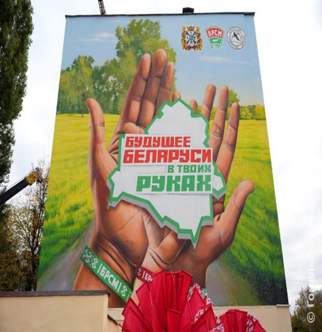

Муралы Гомеля
Ценральный район
Мурал в честь Бородина Т.С. ул. Бородина, д.10а 2022г.
Воевал во вражеском тылу с задачей организации
подрывной и подпольной работы в Гомеле. Начиная с
августа 1941 года, Бородин вёл активную работу по
созданию подполья. В мае 1942 года Бородин был
арестован. В июне- 1942 года расстрелян. В 1965 году за
«особые заслуги, мужество и героизм, проявленные в
борьбе против немецко-фашистских захватчиков»
Тимофей Бородин был посмертно удостоен высокого
звания Героя Советского Союза.

Мурал в честь Мазурова К.Т. ул. Мазурова, 4 2022г.
В 1941-1942 гг. участник Великой Отечественной войны, был ранен. В сентябре 1942 направлен в тыл немецких войск в качестве представителя Центрального штаба партизанского движения в звании подполковника, где до конца 1943 г. работал в партизанских соединениях. Герой Социалистического Труда Награждён пятью Орденами Ленина Орденом Красного Знамени двумя Орденами Отечественной войны I степени Орденом Дружбы народов
Мурал Франциска Скорины ул. Советская, 108 2017г.
Появился в Гомеле к 500-летию белорусского книгопечатания. Украсил гомельский университет, носящий имя белорусского первопечатника. На стене первого корпуса -портрет просветителя, а так же изображени уходящей луны и восходящего солнца, сопровождаемый цитатой «Святло ведаў перамагае цемру невуцтва». Площадь граффити - 64 квадратных метра.

Мурал «Будущее Беларуси в твоих руках» Ланге, 5а 2024г.
Мурал "Будущее Беларуси в твоих руках" появился в Гомеле в дни республиканской общественно-культурной акции "Марафон единства" «Марафона единства» - проект создания арт-объектов с символами Республики в разных городах страны.
На стене изображены три руки – женская, мужская и детская. На ладонях – стилизованный контур страны. Рисунок символизирует молодую семью, стремление к сохранению мира и порядка.